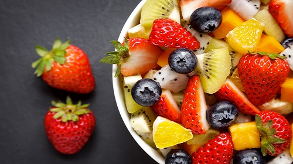
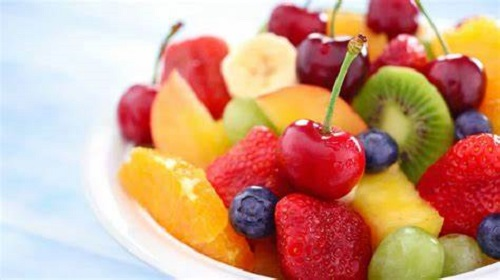
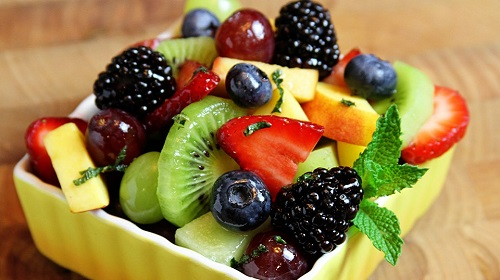
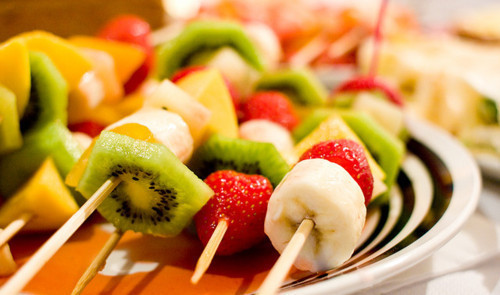

As Melhores frutas são
1- Coco O coco é a melhor frutas pois sua agua é muito saborosa tendo um gosto como a agua normal só que mais doce podendo ser usado em diversas combinações como em sucos,alem disso a agua do coco do ponto de vista nutricional é otima tambem pois ela é rica em potassio e carboidratos,a agua de coco hidrata mais que a agua normal oque é muito bom tambem. Alem da agua o coco tambem tem a polpa que pode ser consumida ela é muito gostosa de se comer e pode ser usada em diversas combinações,como bater a agua e a polpa do coco e ajustar a consistencia de acordo com sua preferencia para ficar mais como um yogurt ou leite,do ponto de vista nutricional a polpa do coco é rica em fibras e gorduras boas. O coco não é tão caro então é acessivel a grande parte da população e tambem não tem restrição de consumo para a maior parte da população,as maiores desvantagens do coco são o transporte do coco que por ele ser muito grande e pesado o transporte é dificultado a abertura do coco e a extração da polpa não é simples se você não tiver ferramentas e um local apropriado a uma dificuldade intrínseca em executar a tarefa. Apesar de tudo o coco ficou em primeiro pois ele é realmente muito versatil e completo apesar das dificuldades em consumir o coco. 2- Banana A banana é a segunda melhor fruta pois ela pode é muito versatil desde comer ela pura a tomar um suco com a banana,do ponto de vista nutricional a banana tem quantidades significativas de carboidratos e potassio e possui vitaminas mineiras fibras proteinas gorduras em menores quantidades,ela é uma das frutas mais consumidas no mundo inteiro. Ela tem uma preço acessivel,tem um plantio simples,pode ser congelada,não a uma dificuldade muito grande no transporte e o nivel de amadurecimento da fruta é simples de entender. 3- Melancia A melancia é uma das melhores frutas pois ela é muito gostosa de se comer pode ser usada para fazer suco e pode ser combinada com outras frutas,a melancia é composta majoritareamente por agua oque faz com que o consumo dela hidrate ao inves de desidratar,do ponto de vista nutricional a melancia é uma fruta com uma densidade calorica muito baixa por ser composta por basicamente agua ela tem em maior parte carboidratos como seu macronutriente principal e quantidades menores de potassio e vitaminas e mineiras.
Ela tem uma transporte dificuldade por seu tamanho mas você pode comprar melancias menores e fatias cortadas,ela tem um preço acessivel para a maior parte das pessoas oque colabora para o consumo dela. 4- Mamão O mamao é uma otima fruta que possui muitos nutrientes e auxilia na flora intestinal,o mamao possui em maior parte carboidratos em sua composição e bastante potassio e varias outras vitaminas e mineiras que junto com uma alimentação equilibrada garante que você não fique desnutrido,ele pode ser usado em diversas combinações de frutas e sucos. 5- Laranja A laranja é uma otima fruta que possui muito carboidrato,vitamina c e fibras,ela é otima para fazer sucos combinando frutas e tomando o proprio suco dela. 6- Tangerina A tangerina é otima para comer e é rica em vitamina c 7- Uva A uva é muito gostosa e pequena e é rica em resveratrol 8- Morango O morango é gostoso mas é caro 9- Açai O açai é muito gostoso e pode ser usado para fazer sorvetes e sucos,ele é caro isso é ruim para consumi-lo em grande quantidade e ele é nutritivo. 10- Abacate O abacate é gostoso e rico em gorduras boas.




Fazer uma salada de frutas pode ser muito bom pois você pode fazer a combinação de diversas frutas combinando assim os seus sabores e texturas,tambem juntando varias frutas você consome uma variedade maior de nutrientes que estão em diversas frutas colaborando para a sua saude.